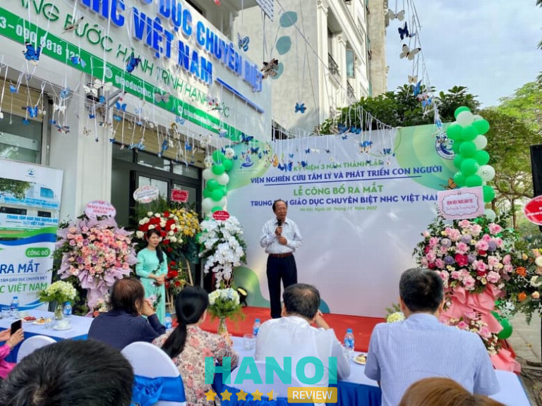
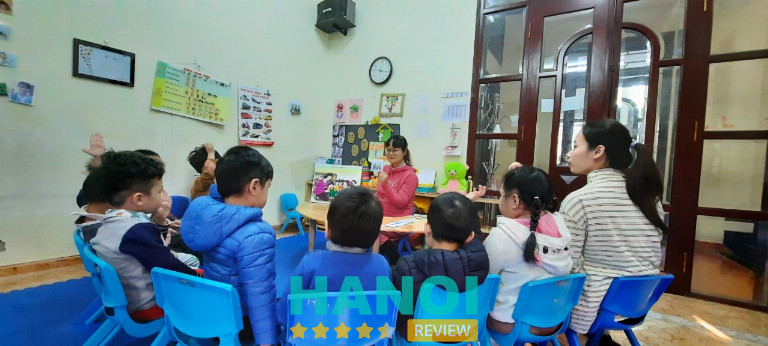
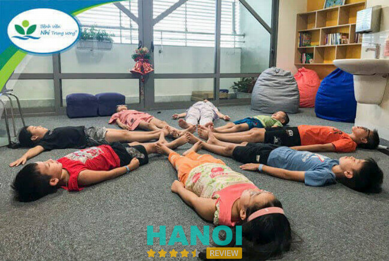
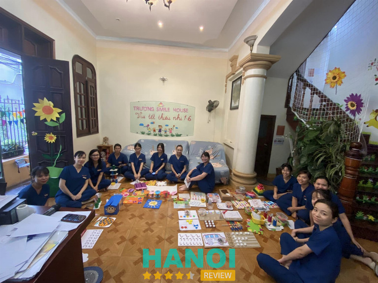
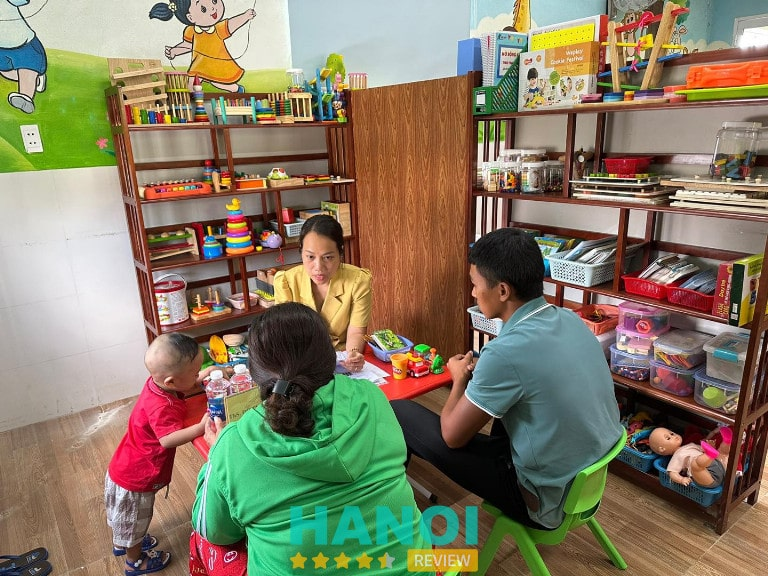
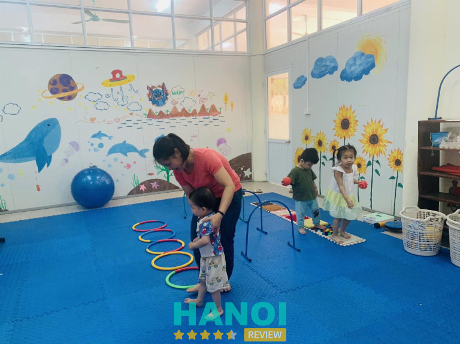

10 Trung tâm dạy trẻ chậm nói tại Hà Nội uy tín, tận tâm, chuyên nghiệp
Theo thống kê cho thấy có đến khoảng 20% trẻ em chậm nói, sử dụng ngôn từ chậm hơn so với nhiều bạn cùng trang lứa. Những trung tâm dạy trẻ chậm nói tại Hà Nội luôn là những nơi uy tín điều trị và dạy trẻ em chậm nói giúp bé phát triển khả năng ngôn ngữ, tạo môi trường năng động, không ngừng nâng cao kiến thức về ngôn ngữ cho bé.
Top 10 Trung tâm dạy trẻ chậm nói tại Hà Nội tận tâm nhất
10 Trung tâm dạy trẻ chậm nói tại Hà Nội mà HaNoiReview thông tin đến các bạn dưới đây sẽ giúp cho các bạn tìm được một trung tâm uy tín chất lượng nhất tại Hà Nội.
Trung tâm Tâm lý Giáo dục Chuyên biệt NHC Việt Nam
Trung tâm Tâm lý Giáo dục Chuyên biệt NHC Việt Nam là phát triển trong lĩnh vực giúp trẻ em vượt qua nhiều trở ngại đang giới hạn bản thân như các vấn đề chậm nói mà trẻ em gặp phải.
Tại Việt Nam, Trung tâm Tâm lý Giáo dục Chuyên biệt NHC Việt Nam đã trở thành đơn vị tiên phong can thiệp trẻ chậm nói, áp dụng nhiều phương pháp khoa học hiện đại giúp cải thiện và chữa trị dứt điểm tình trạng chậm nói ở trẻ.

Trẻ em bị chậm nói khi đến học tại Trung tâm Tâm lý Giáo dục Chuyên biệt NHC Việt Nam sẽ được đội ngũ chuyên gia, giáo viên có chuyên môn cao, đạt nhiều chứng chỉ đào tạo quốc tế, có kinh nghiệm nhiều năm trong lĩnh vực, can thiệp, dạy và điều trị cho trẻ chậm nói.
Trẻ chậm phát triển ngôn ngữ thường do các nguyên nhân, do bệnh lý khả năng nghe kém, trẻ sinh thiếu tháng; các vấn đề về mặt tâm lý môi trường có thể do bị shock tâm lý, cho trẻ tiếp xúc với tivi và điện thoại từ sớm, trẻ bị hạn chế tiếp xúc với môi trường, chậm nói do tự kỷ,…
Tại NHC Academy có phương pháp âm ngữ trị liệu kết hợp với tâm lý trị liệu giải quyết chứng chậm nói ở trẻ một cách an toàn, hiệu quả và triệt để.
Phương pháp tâm lý trị liệu kết hợp âm ngữ trị liệu được NHC Academy áp dụng điều trị giúp tìm ra nhiều nguyên nhân gốc rễ của chứng chậm nói mà trẻ mắc phải. Phương pháp này giúp trẻ khơi dậy khả năng phát triển lời nói bằng cách phát hiện ra các mắt xích quan trọng trong ngôn ngữ và cải thiện để trẻ thúc đẩy mạnh hơn trong giao tiếp.
Phương pháp can thiệp do NHC Academy phát triển giúp trẻ cải thiện chứng chậm nói mà cần sử dụng thuốc, không can thiệp vào cơ thể, không có tác dụng phụ, không để lại nhiều biến chứng về sau.
Ưu điểm của phương pháp là giúp tìm ra nguyên nhân gốc rễ gây ra chứng chậm nói, phương pháp này là kết quả nghiên cứu nhiều năm của đội ngũ Chuyên gia Tâm lý, Master Coach thuộc Trung tâm Tâm lý Trị liệu NHC Việt Nam. Đến nay đã có hàng nghìn trẻ em được điều trị dạy học và khỏi hoàn toàn được nhiều phụ huynh tin tưởng.
Thông tin liên hệ:
- Địa chỉ: nhà 235 phố Quan Hoa, Q. Cầu Giấy, Hà Nội
- Điện thoại: 090 681 81 23
- Email: giaoducnhc@gmail.com
- Website: giaoducnhc.vn
- Fanpage: FB.com/giaoducnhc
Xem thêm: 10 Trung tâm giáo dục đặc biệt tại Hà Nội có chương trình dạy tốt nhất
Trung tâm Giáo dục Đặc biệt Thiên Thần Nhỏ
Để điều trị kịp thời và can thiệp sớm để những trẻ em chậm nói có thể hoà nhập được với gia đình và cộng đồng nhanh chóng, Trung tâm Giáo dục Đặc biệt Thiên Thần Nhỏ dạy trẻ chậm nói tại Hà Nội có nhiều phương pháp hiệu quả hỗ trợ cho trẻ hiệu quả.

Theo trung tâm Thiên Thần Nhỏ trẻ nhỏ rối loạn ngôn ngữ thương ở 2 dạng rối loạn ngôn ngữ tiếp nhận (chậm hiểu lời) và rối loạn ngôn ngữ thể hiện (chậm nói).
Được đầu tư với quy mô lớn cùng trang thiết bị hiện đại, các y bác sĩ tại đây luôn áp dụng nhiều phương pháp chăm sóc cho trẻ từ 18 tháng đến 5 tuổi tiếp xúc với môi trường, không gian tích cực giúp điều trị chậm nói hiệu quả.
Phụ huynh có thể đăng ký cho bé học cả ngày hoặc theo buổi, vào tuần đầu tiên bé sẽ được đánh giá về nhiều mặt sinh hoạt, nhận thức, phản ứng,… để đưa ra đánh giá chung và đưa ra phương pháp can thiệp phù hợp cho trẻ.
Trong quá trình dạy học điều trị, kế hoạch sẽ được đánh giá lại sau 2 tuần để xem lại kết quả phục hồi chứng chậm nói và những vấn đề khác nhằm giúp bé phát triển một cách toàn diện.
Việc dạy học điều trị tại trung tâm Thiên Thần Nhỏ cũng được gia đình của trẻ nắm rõ để phối hợp điều trị, gia đình cùng bé tương tác, giúp quá trình dạy học điều trị chậm nói cho bé có được hiệu quả nhanh chóng.
Thông tin liên hệ:
- Địa chỉ: 55 ngõ 447 phố Ngọc Lâm, Q. Long Biên, Hà Nội
- Điện thoại: 098 314 1902
- Email: nguyenmai1902@gmail.com
- Website: daytretukylongbien.edu.vn
- Fanpage: FB.com/trungtamdaytrechamnoitailongbien
Trung tâm Nghiên cứu Giáo dục Hoà Nhập và Phục hồi Chức năng Vina Health
Trung tâm Nghiên cứu Giáo dục Hoà Nhập và Phục hồi Chức năng Vina Health là trung tâm uy tín, quy mô lớn được Bộ Khoa học và Công nghệ cấp phép, trực thuộc quản lý của Hội Khoa học Tâm lý – Giáo dục Việt Nam.
Vina Health Trung tâm dạy trẻ chậm nói tại Hà Nội là đơn vị được nhiều phụ huynh tin tưởng trong việc dạy học, cải thiện chứng chậm nói ở trẻ. Trung tâm Vina Health luôn nghiên cứu chuyên sâu về các phương pháp can thiệp toàn diện, ứng dụng và hỗ trợ cho trẻ em chậm nói, nhận thức về ngôn ngữ chậm, rối loạn ngôn ngữ,…
Với phương pháp âm ngữ trị liệu tại Trung tâm Vina Health sẽ giúp trẻ cải thiện khả năng phát âm và ngôn ngữ. Trước khi dạy học, trẻ em sẽ được các bác sĩ chuyên môn cao có nhiều năm kinh nghiệm đánh giá xác định về các vấn đề mà bé gặp phải.
Sau khi đánh giá xong, bác sĩ sẽ có mục tiêu rõ ràng để lên kế hoạch can thiệp cho trẻ, mục tiêu dạy học này có cả sự kết hợp của bác sĩ và gia đình để cải thiện khả năng nói ở trẻ.
Để điều trị kịp thời cho trẻ bị chậm nói gia đình nên xem xét các biểu hiện và đưa trẻ đến Trung tâm Vina Health để được bác sĩ chẩn đoán hội chứng này thuộc nhóm chậm nói do tự kỷ hay chậm nói do đơn thuần.
Thông tin liên hệ:
- Địa chỉ: 49 Nguyễn Viết Xuân, Q. Thanh Xuân, Hà Nội
- Điện thoại: 024 6687 1269
- Email: lienhe@vinahealth.edu.vn
- Website: trungtamphuchoichucnang.com
- Fanpage: FB.com/vinahealth.edu.vn
Xem thêm: 10 Trung tâm tâm lý trị liệu tại Hà Nội uy tín nhất, dịch vụ tận tâm
Trường chuyên biệt Ánh Sao
Trường chuyên biệt Ánh Sao là một trong những cơ sở uy tín hoạt động nhiều năm trong việc hỗ trợ trẻ chậm nói, trẻ tự kỷ bẩm sinh, trẻ tăng động,… Với nhiều trẻ bị chậm nói, Trường chuyên biệt Ánh Sao luôn hỗ trợ điều trị trong môi trường thân thiện, các bác sĩ có chuyên môn cao.

Quá trình chữa trị liên tục tại Trường chuyên biệt Ánh Sao được áp dụng các phương pháp ABA (phân tích hành vi và ứng dụng), trị liệu ngôn ngữ và lời nói, social story (câu chuyện xã hội),… Và nhiều phương pháp can thiệp khác đã giúp rất nhiều trẻ em chậm nói hoà nhập với gia đình và xã hội.
Trẻ chậm nói khi điều trị sẽ được các y bác sĩ theo dõi sát sao quá trình phát triển và đánh giá định kỳ theo tuần để so sánh sự tiến bộ và cải thiện các vấn đề khác trong việc phục hồi cho trẻ.
Kế hoạch điều trị và phối hợp với gia đình điều trị cho trẻ được lên kế hoạch theo tháng, theo tuần, thay đổi linh hoạt nhằm phù hợp với từng giai đoạn hồi phục.
Môi trường điều trị tại Trường chuyên biệt Ánh Sao trung tâm dạy trẻ chậm nói tại Hà Nội tổ chức rất nhiều hoạt động vui chơi, giải trí, phát triển các hoạt động khám phá giúp trẻ có thêm nhiều kỹ năng và đẩy nhanh tiến độ trong việc hồi phục.
Thông tin liên hệ:
- Địa chỉ: Nhà 69 ngõ 225 Phố Vọng, Q. Hai Bà Trưng, Hà Nội
- Điện thoại: 091 272 04 96
- Website: tretuky.org.vn
- Fanpage: FB.com/100063636040546
Bệnh viện Nhi Trung Ương
Bệnh viện Nhi Trung Ương khoa tâm lý chuyên điều trị các vấn đề tâm lý cho trẻ, các vấn đề trẻ tự kỉ, rối loạn tăng động, trẻ chậm nói,…
Bệnh viện Nhi Trung Ương có đội ngũ y bác sĩ có nhiều năm kinh nghiệm trong việc dạy trẻ, điều trị tâm lý, chậm nói ở trẻ. Các vấn đề về chậm nói có thể liên quan đến tự kỉ ở trẻ em, điều này rất cần gia đình kịp thời đưa trẻ đến các bệnh viện, trung tâm tâm lý để điều trị theo đúng phương pháp.

Trung tâm dạy trẻ chậm nói tại Hà Nội khoa tâm lý Bệnh viện Nhi Trung Ương cho biết, các trẻ em có dấu hiệu chậm nói nên can thiệp càng sớm càng tốt để có được hiệu quả tốt nhất.
Với các phương pháp điều trị bằng cách dạy trẻ trong môi trường năng động, vui vẻ, kết hợp với gia đình dạy cho trẻ những phương pháp cơ bản để giao tiếp,… Bệnh viện Nhi Trung Ương có nhiều nhà chuyên môn, học chuyên sâu trong các lĩnh vực tâm thần, tâm lý, giáo dục đặc biệt.
Với nhiều năm kinh nghiệm trong việc dạy học phục hồi chức năng cho trẻ chậm nói khoa tâm lý Bệnh viện Nhi Trung Ương luôn tự hào được nhiều phụ huynh tin tưởng là một trong những nơi tận tâm, giúp trẻ chậm nói hồi phục trong một thời gian ngắn.
Bệnh viện Nhi Trung Ương Trung tâm dạy trẻ chậm nói tại Hà Nội khoa tâm lý làm việc giờ hành chính từ 7h00 – 16h00 (thứ 2 – thứ 6).
Thông tin liên hệ:
- Địa chỉ: 18/879 La Thành, P Láng Thượng, Q. Đống Đa, Hà Nội
- Điện thoại: 0246273 8532
- Email: chamsockhachhang@nch.gov.vn
- Website: benhviennhitrunguong.gov.vn
- Fanpage: FB.com/bvnhitrunguong
Xem thêm: 10 Địa chỉ trị liệu trầm cảm tại Hà Nội uy tín, hiệu quả, chuyên nghiệp
Hệ thống Trung tâm Âm ngữ Trị liệu Happy House
Hệ thống Trung tâm Âm ngữ Trị liệu Happy House được nhiều phụ huynh biết đến là nơi tiếp nhận và can thiệp cho trẻ bị chậm nói, bằng nhiều phương pháp can thiệp khoa học chính thống được công nhận và đánh giá cao trên thế giới.
Đối với các trẻ bị chậm nói, Happy House trung tâm dạy trẻ chậm nói tại Hà Nội có các chương trình học đa dạng nhu can thiệp các nhân 1 – 1, trị liệu nhóm, trị liệu vận động, trị liệu kỹ năng sống, âm nhạc trị liệu, âm ngữ trị liệu.

Với các phương pháp giảng dạy phân tích hành vi ứng dụng, âm ngữ trị liệu,… được các đội ngũ cán bộ, giáo viên, nhân viên hơn 100 người có trình độ chuyên môn nghiệp vụ sư phạm Giáo Dục Đặc Biệt phụ trách.
Trung tâm Happy House luôn phát triển và hỗ trợ nhiều phụ huynh có con em gặp nhiều vấn đề về chậm nói, tại đây có chương trình test và tư vấn miễn phí cho trẻ, giúp cha mẹ nhận biết được các khó khăn hiện tại của con trẻ.
Các vấn đề trẻ chậm nói sẽ được các chuyên gia tư vấn, hướng dẫn các chiến lược giúp con trẻ phát triển ngôn ngữ nhanh nhất.
Sau các buổi dạy, các bé có thể mạnh dạng hơn trong việc giao tiếp, tinh thần của bé cùng được cải thiện, vui vẻ hơn, hoà đồng, mạnh dạng hơn. Trung tâm Happy House hoạt động từ 7h00 – 17h00 từ thứ 2 đến thứ 7.
Thông tin liên hệ:
- Địa chỉ: 1 – 11 Roman Plaza, đường Tố Hữu, P. Đại Mỗ, Q. Nam Từ Liêm, Hà Nội
- Điện thoại: 033 984 0999
- Email: happyhouse.hanoi@gmail.com
- Website: happyhouse.info.vn
- Fanpage: FB.com/trungtamamngutrilieuHappyHouse
Trung tâm Giáo dục Hoà nhập Happy Smile
Trung tâm Giáo dục Hoà nhập Happy Smile là địa điểm uy tín, quy tụ đội ngũ giáo viên được đào tạo chuyên sâu trong các chuyên ngành tâm lý giáo dục giáo dục đặc biệt,…
Với nhiều năm kinh nghiệm trong việc điều trị cho trẻ tự kỷ, chậm nói, trẻ gặp khó khăn trong giao tiếp, gặp vấn đề tâm lí, Trung tâm Giáo dục Hoà nhập Happy Smile đã giúp rất nhiều trẻ chậm nói hoà nhập với gia đình, cộng đồng.
Với nhiều phương pháp dạy học đa dạng Happy Smile Trung tâm dạy trẻ chậm nói tại Hà Nội có các chương trình học theo đăng kí, học theo bán trú, hoạt động can thiệp phục hồi, trị liệu âm nhạc,…
Bên cạnh đó tại đây còn có rất nhiều hoạt động vui chơi, các sự kiện ngày lễ hội,… giúp con trẻ có thể dễ dàng hồi phục trong môi trường năng động.
Phương pháp can thiệp do Trung tâm Giáo dục Hoà nhập Happy Smile sử dụng luôn đem lại hiệu quả cao, sự tương tác từ phía đội ngũ giáo viên tại trung tâm và lộ trình kèm theo cho các bậc phụ huynh hỗ trợ giúp trẻ mau chóng hoà nhập cộng đồng.
Ưu điểm của phương pháp dạy học giúp trẻ thoát khỏi các vấn đề chậm nói, là kết quả nghiên cứu của các chuyên gia Tâm lý quốc tế. Trung tâm Giáo dục Hoà nhập Happy Smile hoạt động từ 7h00 – 18h30 từ thứ 2 đến thứ 7.
Thông tin liên hệ:
- Địa chỉ: 32 Biệt thự Hoa Viên, khu đô thị Đặng Xá, Q. Gia Lâm, Hà Nội
- Điện thoại: 094 601 9979
- Email: ceothienmy@gmail.com
- Website: hoanhaptuky.edu.vn
- Fanpage: FB.com/hoanhaptuky
Xem thêm: 10 Trung tâm luyện thi IELTS tại Hà Nội chất lượng, giá rẻ nhất
Trung tâm Phương Thanh
Là địa chỉ có tiếng trong lĩnh vực can thiệp trẻ gặp vấn đề trong giao tiếp, chậm nói, Trung tâm Phương Thanh với hơn 10 năm kinh nghiệm đã giúp rất nhiều trẻ em thoát khỏi vấn đề chậm nói, giúp các phụ huynh không còn lo lắng về vấn đề mà con trẻ mắc phải.
Tự hào về sự đầu tư trong phương pháp dạy học, điều trị chậm nói cho trẻ, đội ngũ nhân viên tại đây luôn theo đuổi phương châm yêu thương trẻ em.
Trung tâm Phương Thanh điều trị cho các trẻ em chậm nói theo nhiều phương pháp, kết hợp với hệ thống trị liệu và giáo dục mầm non.
Bằng nhiều phương pháp khác nhau kết hợp điều trị, các phương pháp can thiệp của trung tâm dạy trẻ chậm nói tại Hà Nội Phương Thanh luôn phù hợp cho từng đối tượng học sinh.
Trung tâm Phương Thanh dạy trẻ chậm nói tại Hà Nội xây dựng kế hoạch can thiệp dựa trên nhu cầu thực tế của các phụ huynh. Kế hoạch này có thể bao gồm các phương pháp can thiệp các nhân hoặc nhóm, điều hoà cảm giác và phục hồi chức năng nói ở trẻ.
Tại đây còn cung cấp các khoá tập huấn cho gia đình để phụ huynh có thể tự hỗ trợ cho con trẻ trong quá trình can thiệp. Đội ngũ giáo viên tại Trung tâm Phương Thanh đều được tuyển chọn một cách cẩn thận và được đào tạo từ các chuyên ngành chính như Tâm lý giáo dục, Giáo dục Đặc biệt, Mầm non và Tiểu học,…
Các kiến thức và kỹ năng của các giáo viên đều được thông qua các hình thức dự giờ, giám sát và tập huấn định kỳ do ban giám đốc và ban cố vấn chịu trách nhiệm.
Trung tâm Phương Thanh dạy trẻ chậm nói tại Hà Nội hoạt động 7h30 – 17h45 từ thứ 2 đến thứ 7.
Thông tin liên hệ:
- Địa chỉ: 5 ngõ 51 Nguyễn Viết Xuân, P. Khương Mai, Q. Thanh Xuân, Hà Nội
- Điện thoại: 097 697 6093
- Email: nguyenthanh.tlsp@gmail.com
- Fanpage: FB.com/phuongthanh.edu.vn
Trung tâm Tuệ Tâm
Trung tâm Tuệ Tâm là địa chỉ uy tín điều trị chứng chậm nói ở trẻ bằng các phương pháp trải nghiệm các hoạt động ngoài trời, tạo cơ hội cho trẻ tiếp xúc với các tình nguyện viên, bạn bè, thầy cô, cha mẹ,…Giúp trẻ phát triển kỹ năng giao tiếp và nhiều kỹ năng sống quan trọng.
Các đối tượng trẻ em chậm nói sẽ được Trung tâm Tuệ Tâm can thiệp bằng cách đánh giá và biên soạn tài liệu tổ chức các chương trình kỹ năng,…

Nhiều phụ huynh biết đến Tuệ Tâm Trung tâm dạy trẻ chậm nói tại Hà Nội với hiệu quả điều trị nhanh chóng và cơ sở vật chất hiện đại đa dạng dụng cụ hỗ trợ đảm bảo rằng con trẻ có môi trường thuận lợi cho quá trình rèn luyện.
Các trẻ chậm nói khi đến với Tuệ Tâm đều được trang bị các kỹ năng mềm, bao gồm nhiều kỹ năng giao tiếp xã hội và nhiều hoạt động vui nhộn như âm nhạc, yogo, vẽ, đọc viết, và làm toán.
Tại trung tâm dạy trẻ chậm nói tại Hà Nội Tuệ Tâm luôn hướng đến việc phát triển toàn diện cho trẻ, để các em có thể tự tin tưởng và phát huy trong tương lai.
Thông tin liên hệ:
- Địa chỉ: 46 ngõ 124 Phố Hoàng Ngân, P. Trung Hoà, Q. Cầu Giấy, Hà Nội
- Điện thoại: 0904 507 772
- Email: trungtamtuetam@gmail.com
- Fanpage: FB.com/trungtamtuetam
Trung tâm Can thiệp sớm Đại học Thủ Đô Hà Nội
Trung tâm Can thiệp sớm Đại học Thủ Đô Hà Nội là nơi quy tụ các chuyên gia và giảng viên ưu tú trong các lĩnh vực Giáo dục đặc biệt, Tâm lý học, Giáo dục học, Công tác Xã hội, Vật lý trị liệu và Ngữ âm trị liệu,..
Không chỉ đánh giá và cung cấp nhiều khoá đào tạo cho trẻ chậm nói mà còn kết hợp với nhiều trường mầm non và cơ sở giáo dục khác trong việc đào tạo và tập huấn giáo viên về việc chăm sóc trẻ.

Tại trung tâm, các trẻ từ 2 tuổi trở lên mắc các chứng chậm nói sẽ được các giáo viên hướng dẫn, giúp trẻ làm quen với môi trường. Và tập trung rèn luyện các thói quen giao tiếp, tiếp xúc với các môn học, các trò chơi, các nhân viên, đội ngũ giáo viên và gia đình để nâng cao khả năng giao tiếp cho trẻ.
Để phục hồi được tình trạng chậm phát triển ngôn ngữ ở trẻ nhanh chóng, phụ huynh nên đưa trẻ tới kiểm tra tại Trung tâm Can thiệp sớm Đại học Thủ Đô Hà Nội để có biện pháp điều trị sớm.
Thông tin liên hệ:
- Địa chỉ: Trường Đại học Thủ Đô Hà Nội, số 98 Dương Quảng Hàm, Q. Cầu Giấy, Hà Nội
- Điện thoại: 0389 959 156
- Email: ntquynh@daihocthudo.edu.vn
- Website: hnmu.edu.vn
- Fanpage: FB.com/canthiepsomdaihocthudo
Top 5 Lưu ý khi chọn Trung tâm dạy trẻ chậm nói tại Hà Nội
Để tìm kiếm và lựa chọn một trung tâm uy tín dạy trẻ chậm nói tại Hà Nội, có một số điểm quan trọng cần xem xét để đảm bảo rằng bạn đang lựa chọn một nơi phù hợp cho con của mình. Dưới đây là 5 lưu ý quan trọng mà bạn cần xem xét:
Chất lượng đội ngũ chuyên gia, bác sĩ, giáo viên: Bạn có thể tham khảo nhiều thông tin về chất lượng đào tạo, và kinh nghiệm chuyên môn về phát triển ở trẻ em, phương pháp trị liệu thông qua việc dạy học.
Đánh giá ban đầu về trẻ: Bạn nên hỏi ý kiến ở nhiều cơ sở khác nhau để đưa ra đánh giá ban đầu của tình trạng phát âm và ngôn ngữ của trẻ. Điều này cực kì quan trọng để xác định rõ vấn đề cụ thể và giúp các trung tâm có kế hoạch can thiệp phù hợp và nhanh chóng.
Phương pháp dạy học: Bạn nên tìm hiểu về phương pháp dạy học do trung tâm sử dụng. Phương pháp này nên được dựa trên nghiên cứu và phù hợp với nhu cầu cải thiện chậm nói ở trẻ. Điều này bao gồm việc sử dụng các hoạt động thực tế và thú vị để kích thích sự quan tâm từ đó nâng cao khả năng nói ở trẻ.
Tương tác gia đình: Để tìm kiếm được một trung tâm uy tín bạn nên xem xét đến sự hợp tác của gia đình mà phía trung tâm đưa ra. Các trung tâm uy tín, làm việc chuyên nghiệp sẽ cung cấp thông tin và hướng dẫn cho phụ huynh nhiều phương pháp để cùng hỗ trợ quá trình học tại trung tâm và tại nhà.
Đánh giá tiến bộ: Trung tâm chuyên nghiệp sẽ thường xuyên đánh giá và báo cáo tiến độ phục hồi giao tiếp ở trẻ, để phụ huynh và giáo viên có thể theo dõi sự phát triển và thay đổi kế hoạch can thiệp đúng lúc nếu cần.
Khi bạn lựa chọn một trung tâm dạy trẻ chậm nói tại Hà Nội, hãy xem xét kỹ lưỡng để đảm bảo sự phát triển và được học tập trong môi trường tốt nhất cho con. Điều quan trọng nhất là đánh giá chất lượng đội ngũ chuyên gia, tiến hành đánh giá tình trạng ở trẻ và xem xét phương pháp dạy học. Hãy cố gắng tìm trung tâm có sự hợp tác với gia đình cung cấp đánh giá tiến độ thường xuyên.
Bạn cũng có thể dành thời gian để tham khảo ý kiến từ các phụ huynh khác, xem xét, đánh giá của trung tâm và đặt câu hỏi cụ thể để đảm bảo rằng bạn đang lựa chọn đúng nơi, phù hợp với nhu cầu điều trị chậm nói của con bạn. Quá trình này cần sự cân nhắc và nghiên cứu để đảm bảo rằng con bạn nhận được sự can thiệp tốt nhất để phát triển ngôn ngữ và kỹ năng giao tiếp. Cảm ơn các bạn đã theo dõi bài viết.
Có thể bạn quan tâm
- 10 Địa chỉ khám chữa bệnh bằng Đông Y tại Hà Nội chất lượng tốt nhất
- 10 Địa chỉ châm cứu bấm huyệt tại Hà Nội uy tín, bác sĩ giàu kinh nghiệm
- 5 Phòng khám nha khoa Q. Cầu Giấy, HN được tin chọn hàng đầu
DOANH NGHIỆP: Đăng tải thông tin MIỄN PHÍ.
Tin đọc nhiều


10 Trung tâm can thiệp trẻ tự kỷ tại Hà Nội chất lượng tốt nhất
Phát hiện con mình có dấu hiệu mắc bệnh tự kỷ nên đang tìm kiếm một trung tâm can thiệp trẻ tự kỷ tại Hà...
10 Trường mầm non tại khu Linh Đàm uy tín, môi trường tốt nhất cho...
Lựa chọn trường mầm non tốt cho con luôn là mối quan tâm hàng đầu của các bậc phụ huynh hiện nay. Khu vực Linh...

10 Trung tâm giáo dục đặc biệt tại Hà Nội tốt nhất
Trong nhà có trẻ em mắc chứng tự kỷ, chậm phát triển, tăng động,... và bạn đang tìm kiếm một trung tâm giáo dục đặc...

10 Trung tâm can thiệp trẻ tăng động giảm chú ý tại Hà Nội uy...
Các trung tâm can thiệp trẻ tăng động giảm chú ý tại Hà Nội đang thu hút sự quan tâm của những bậc phụ huynh...

Trở thành người đầu tiên bình luận cho bài viết này!